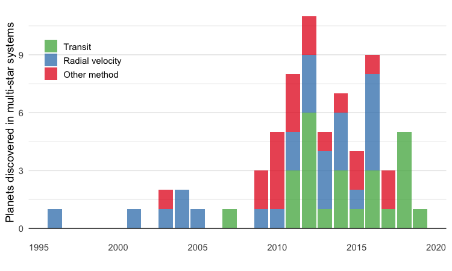
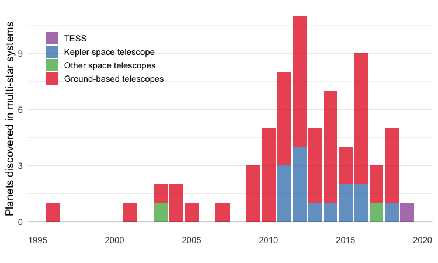
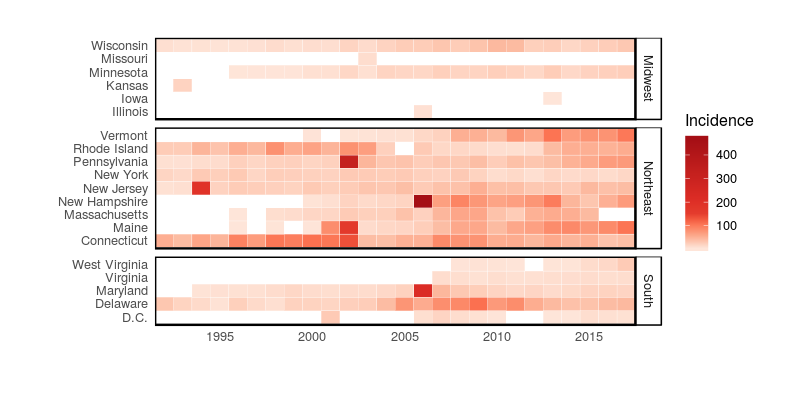
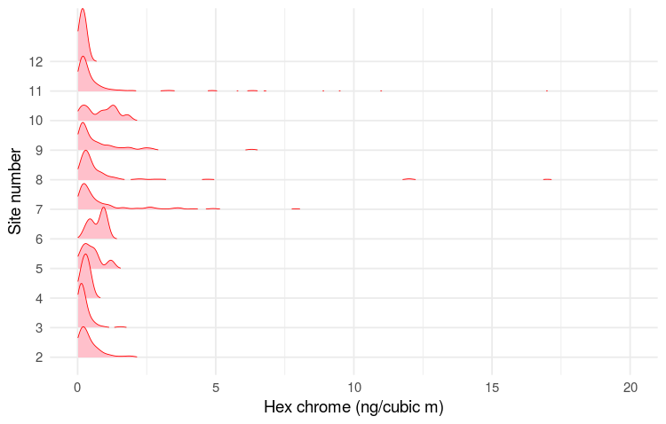
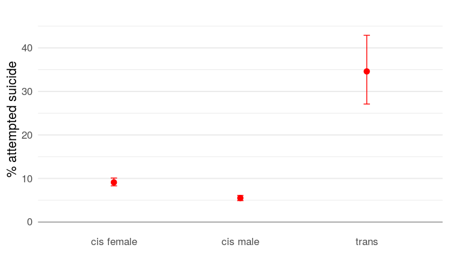
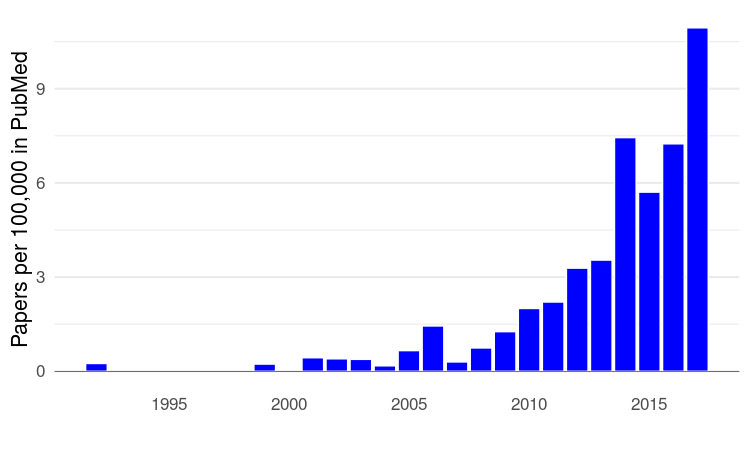
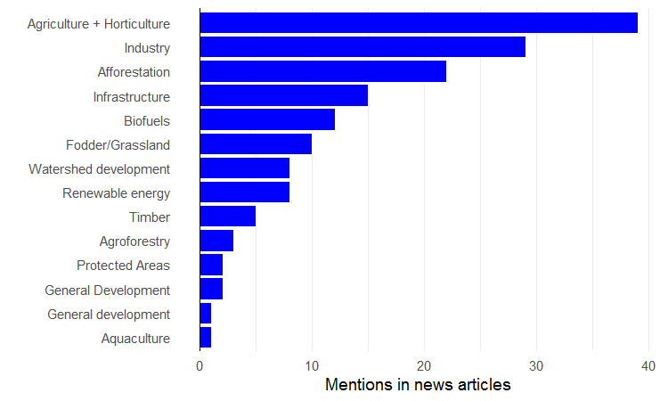

Visual Journalism: Student Projects
A complilation of work completed by students in the Spring 2019 data visualization class at the UC Santa Cruz Science Communication Program. Instructor: Peter Aldhous.
Bailey Bedford
Precipitation In the Contiguous US
Average annual precipitation, 2001-2015

Source: University of Delaware Air Temperature & Precipitation
Difference from 1901-1950

Source: University of Delaware Air Temperature & Precipitation
Erika Carlson
Exoplanet Discovery In Multi-Star Systems
By Method

Source: NASA Exoplanet Archive
By Telescope

Source: NASA Exoplanet Archive
Erin Garcia De Jesus
Lyme Disease Incidence

Source: CDC
Hannah Hagemann
Hexavalent Chromium Pollution Monitoring In Paramount, California
Distribution Of Measurements At Each Site

Source: South Coast Air Quality Management District
Helen Santoro
Trans Youth Health
Suicide Risk

Source: Johns et al, 2019
Research Papers

Source: PubMed
Katie Brown
Pollution Burden In The Pajaro Valley
Source: Califorina Office of Environmental Health Hazard Assessment
Priyanka Runwal
News Coverage Of “Wastelands” In India
Reasons Given For Development

Source: Original research
Rodrigo Pérez Ortega
eDNA And Marine Biodiversity
Research Papers
Source: PubMed
Detection of Marine Vertebrates by eDNA In Monterey Bay
Source: Andruszkiewicz et al 2017
Sofie Bates
Wildfire Smoke, Air Quality, And UC Campus Closures During The Camp Fire
UC Berkeley
Source: EPA AirNow
UC Davis
Source: EPA AirNow
Thomas Garlinghouse
Habitat Change in The Elkhorn Slough

Source: Kerstin Wasson, UC Santa Cruz